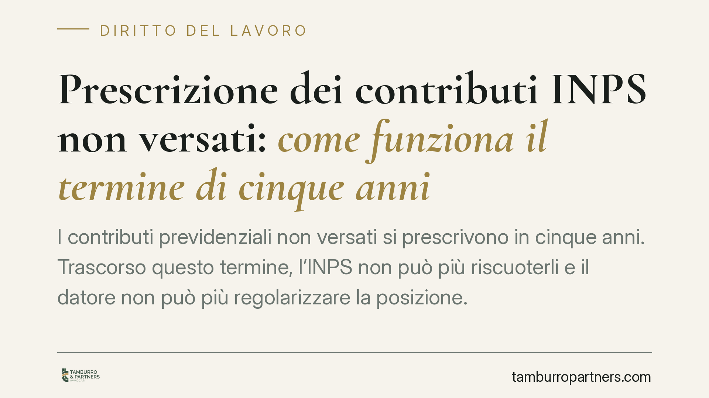

Prescrizione dei contributi INPS non versati: come funziona il termine di cinque anni
I contributi previdenziali non versati si prescrivono in cinque anni. Trascorso questo termine, l'INPS non può più riscuoterli e il datore non può più regolarizzare la posizione. Per il lavoratore significa un possibile buco contributivo, con effetti sulla pensione. Vediamo quando decorre il termine, cosa cambia per i periodi anteriori al 1996 e quali rimedi restano.

Il termine quinquennale e la sua origine
La prescrizione dei contributi previdenziali è disciplinata dall'art. 3, commi 9 e 10, della legge 8 agosto 1995, n. 335. La regola generale è chiara: i contributi dovuti all'INPS per l'assicurazione generale obbligatoria (invalidità, vecchiaia e superstiti) si prescrivono in cinque anni.
Prima della riforma del 1995 il termine ordinario era decennale. La legge n. 335 ha ridotto il periodo a cinque anni, ma con una disciplina transitoria che è bene comprendere per evitare errori.
Da quando decorre e il regime transitorio
Il termine quinquennale opera pienamente per i contributi relativi ai periodi dal 1° gennaio 1996 in poi. Per i periodi anteriori, il legislatore ha previsto un meccanismo di salvaguardia.
In base all'art. 3, comma 10, della l. 335/1995, per i contributi maturati prima dell'entrata in vigore della riforma resta applicabile il termine decennale nei casi in cui vi sia stata denuncia del lavoratore o dei suoi superstiti. In assenza di tale denuncia, si applica il termine quinquennale. La denuncia rileva dunque non come atto interruttivo in senso stretto, ma come presupposto per il mantenimento del più ampio termine decennale sui periodi pregressi.
La titolarità del credito contributivo appartiene all'INPS, non al lavoratore. Per questo gli atti idonei a interrompere la prescrizione (diffide, avvisi di addebito, atti di riscossione) devono in linea di principio provenire dall'ente creditore. L'iniziativa del lavoratore non equivale, di regola, a un atto interruttivo del credito INPS, salvo il caso della denuncia che incide sul regime transitorio appena descritto. Su questo assetto la giurisprudenza di legittimità in materia di lavoro è orientata in senso consolidato.
L'effetto più insidioso: l'impossibilità del versamento tardivo
Un aspetto spesso trascurato è che, una volta maturata la prescrizione, il datore non può più versare i contributi arretrati. La prescrizione previdenziale opera d'ufficio: l'ente non può ricevere il pagamento di contributi ormai prescritti, né il datore può sanare volontariamente la propria posizione.
Questo distingue la materia previdenziale dal regime civilistico ordinario dell'art. 2946 c.c., dove la prescrizione decennale può essere rinunciata dal debitore. In ambito contributivo, invece, il decorso del termine cristallizza definitivamente la situazione: il buco contributivo, salvo rimedi alternativi, resta.
Cosa cambia per il lavoratore
Per il lavoratore l'effetto pratico è un potenziale vuoto nell'estratto conto previdenziale, con conseguenze sul requisito contributivo per la pensione.
Occorre distinguere due piani:
- Il recupero contributivo verso l'INPS, soggetto ai termini sopra descritti e alla titolarità dell'ente.
- L'azione risarcitoria verso il datore inadempiente, fondata sull'art. 2116 c.c. In base al principio di automaticità delle prestazioni, il lavoratore ha comunque diritto alle prestazioni previdenziali anche in caso di omesso versamento; ma quando l'omissione non è più recuperabile e produce un danno pensionistico, il lavoratore può agire contro il datore per il risarcimento del pregiudizio subìto. Questa azione segue regole e termini propri, distinti dalla prescrizione contributiva.
Cosa fare in concreto
- Verificare l'estratto conto contributivo INPS accedendo con SPID, CIE o CNS al portale dell'Istituto, per individuare eventuali periodi scoperti.
- Segnalare tempestivamente all'INPS le anomalie riscontrate: una denuncia effettuata prima della maturazione della prescrizione può risultare determinante, in particolare per i periodi anteriori al 1996.
- Conservare buste paga, contratti e ogni documentazione utile a dimostrare l'esistenza del rapporto e la retribuzione percepita.
- Distinguere le due strade: recupero contributivo (di competenza INPS) e azione risarcitoria verso il datore ex art. 2116 c.c.
- Valutare i termini con attenzione: agire prima che maturi la prescrizione preserva opzioni che diventano inutilizzabili una volta decorso il quinquennio.
In sintesi
Il termine quinquennale della l. 335/1995 è rigido e opera d'ufficio. Chi sospetta omissioni contributive ha interesse a intervenire per tempo: dopo la prescrizione il versamento non è più possibile e resta soltanto, ove ne ricorrano i presupposti, la via risarcitoria contro il datore inadempiente.
---
Contributo informativo a cura di Tamburro & Partners - Avv. Giuseppe Tamburro. Non costituisce parere legale.
Ogni storia di lavoro ha i suoi tempi.
Se gestisci HR e vuoi un confronto su contenzioso, ispezioni o licenziamenti, scrivi allo studio. Ti rispondiamo entro un giorno lavorativo.